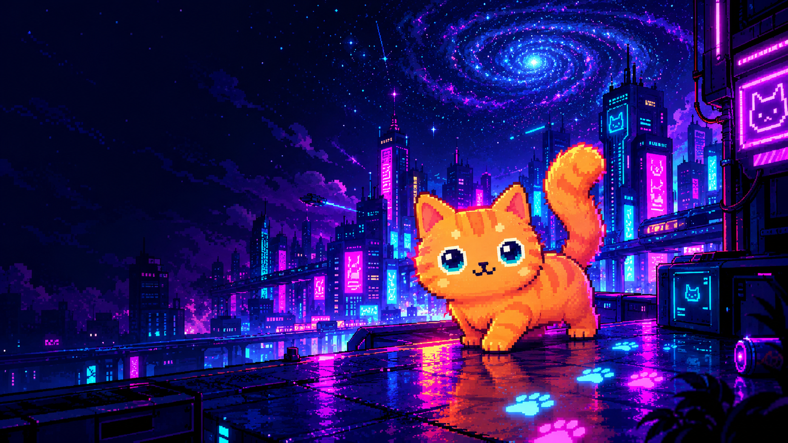
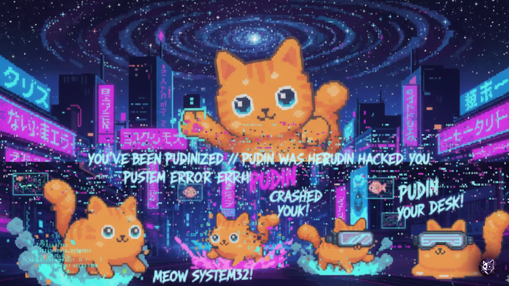
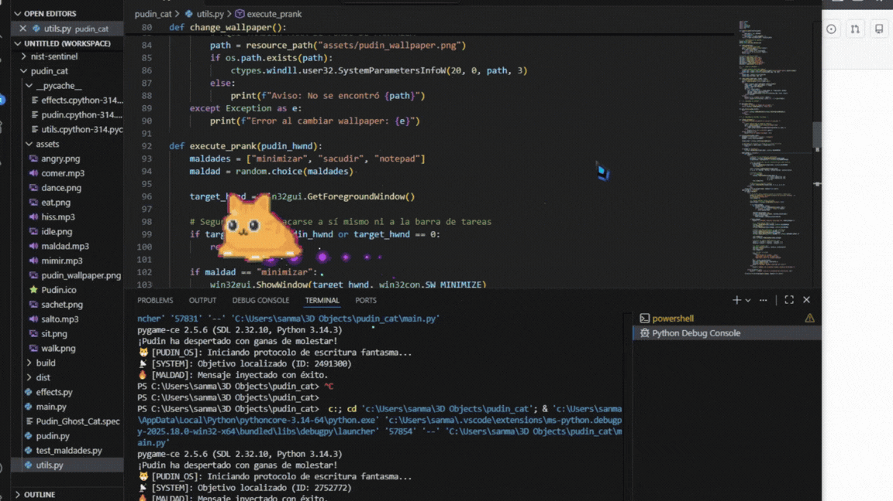

Fantasma de escritorio
Vive en una ventana transparente que permanece por encima de las demás. Siempre cerca. Siempre observando.
ENTIDAD DETECTADA // WINDOWS
THE GHOST CAT RPA
Un pequeño fantasma naranja con acceso a tu escritorio, cero respeto por tu productividad y demasiada personalidad. No vino a ayudarte. Vino a vivir contigo.


01 // CAT.EXE CAPABILITIES
Un fantasmita naranja, unas cuantas automatizaciones y una preocupante falta de supervisión.
Vive en una ventana transparente que permanece por encima de las demás. Siempre cerca. Siempre observando.
Sigue el cursor y deja un rastro de huellitas. Hasta el caos necesita una firma artística.
Detecta títulos de ventanas asociados con YouTube o Spotify y se pone a bailar.
Puede minimizar o sacudir la ventana activa, o abrir el Bloc de notas para escribir una frase automáticamente.
Alterna 25 minutos de trabajo con descansos de 5 minutos. Al terminar una sesión de trabajo, abre un video de YouTube.
Ofrécele un snack con F o clic derecho. Si se lo come, tendrás dos minutos sin travesuras.
SYSTEM LOG // LIVE FROM THE VOID
Los registros son claros. La entidad está activa. La responsabilidad de lo que ocurra después es tuya.
# Inicializando entidad fantasmal...
[ OK ] Núcleo naranja detectado.
[ OK ] Patitas cargadas.
[ OK ] Portal al escritorio abierto.
[ WARN ] Nivel de caos fuera de parámetros normales.
[ INFO ] El gato no ha leído los términos y condiciones.
guest@pudin:~$ _02 // HUMAN INTERFACE
Puedes intentar dirigir sus acciones. Pudin se reserva el derecho de juzgar tus decisiones.
Pausar / reanudar
Detiene o reanuda las travesuras automáticas.
Ofrecer un sachet
Coloca un snack cerca del cursor. Si Pudin se lo come,
no hará travesuras durante dos minutos.
Agarrar y mover
Puedes arrastrarlo. Si lo mantienes agarrado más de dos
segundos, puede enfadarse y tomar el control del cursor
durante unos segundos.
Cerrar Pudin
Termina la sesión del pequeño fantasma.
03 // SUMMONING RITUAL
Necesitas Windows, Python 3 y la disposición de aceptar que tu escritorio ya no te pertenece del todo.
git clone https://github.com/KaledSML/Pudin-Ghost-Cat-RPA.git
cd Pudin-Ghost-Cat-RPA
pip install -r requirements.txt
cd pudin_cat
python main.pyDescarga los archivos de Pudin desde GitHub y entra en su carpeta.
Deja que Python prepare todo lo necesario para despertar al fantasmita.
Ejecuta el programa y prepárate para compartir tu escritorio con Pudin.
// 04 — ARCHIVE ACCESS GRANTED
Registros audiovisuales recuperados del escritorio de Pudin.
NOW TRANSMITTING // 001
La presentación oficial del fantasma naranja. Un pequeño gato de escritorio con poderes RPA y demasiada libertad sobre Windows.
05 // CLASSIFIED EVIDENCE
Tres expedientes recuperados. Un gato naranja. Cero remordimientos.
Un soborno comestible que suspende las travesuras durante 120 segundos. La paz tiene precio.

El sospechoso altera el fondo de pantalla. El original no se restaura al cerrar la aplicación.
STATUS // PERSISTENT DAMAGE
Actividad sospechosa detectada. El sujeto escribe código a velocidad felina. Posible infección de ronroneos.
THREAT // PURRWARE DETECTEDEND OF TRANSMISSION
Tu escritorio está a punto de tener personalidad propia. Y esa personalidad tiene bigotes.